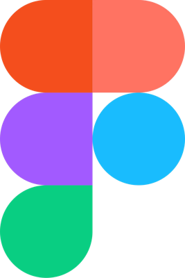
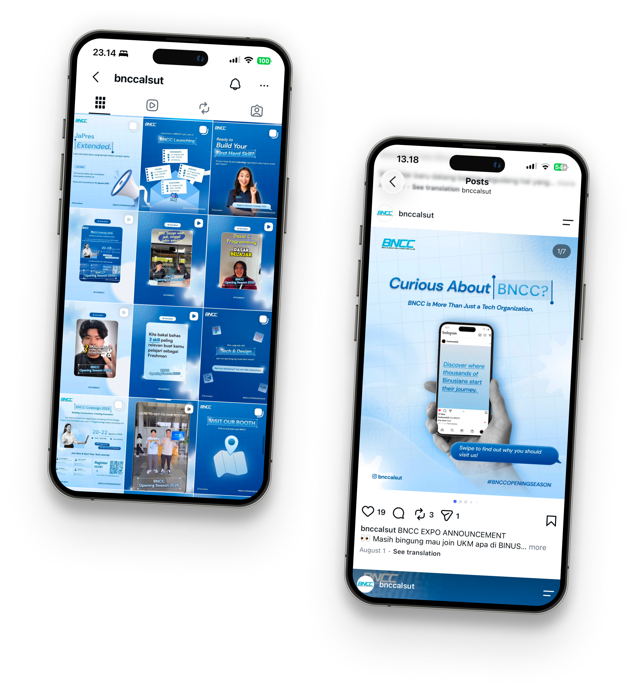
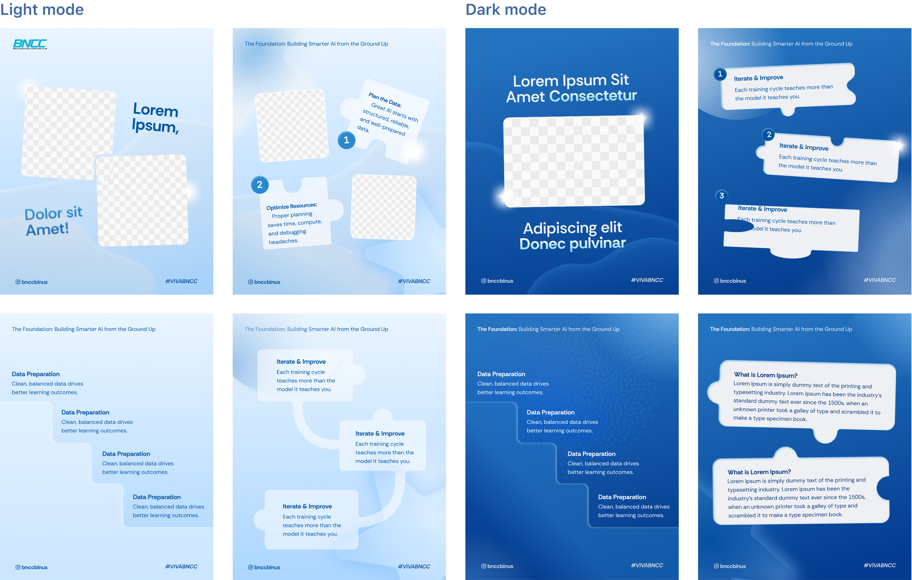
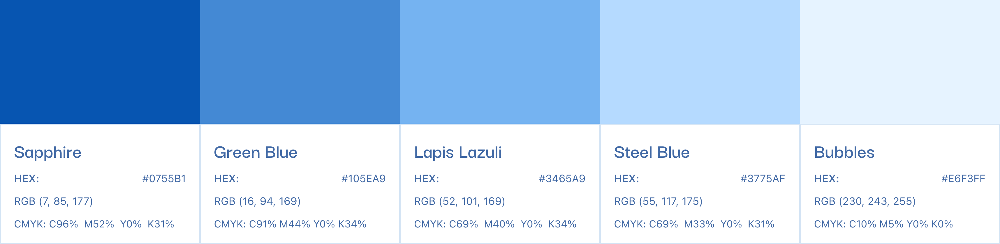
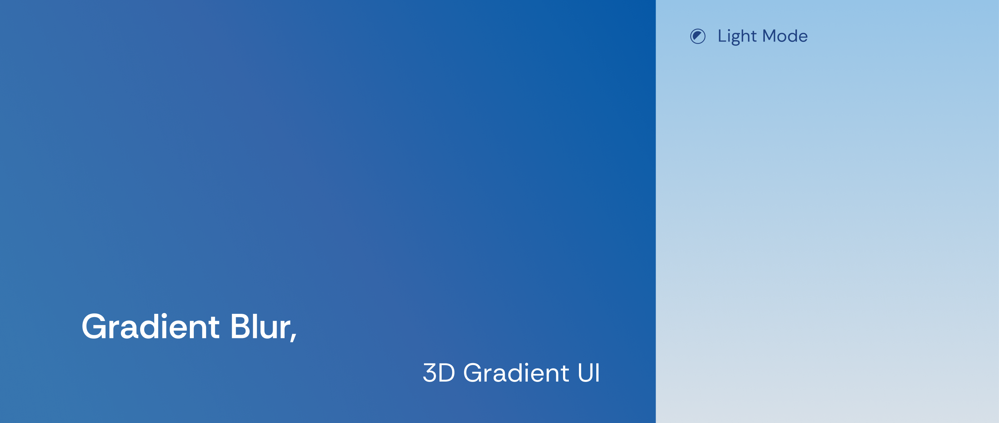
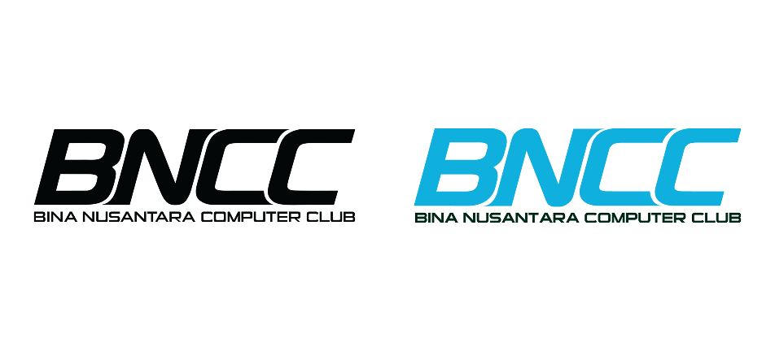
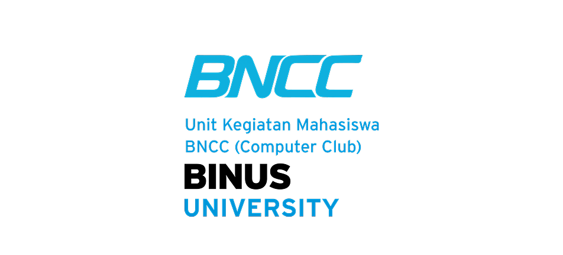

Organization Brand Redesign · 2025Bina Nusantara Computer Club (BNCC)

Overview
Bina Nusantara Computer Club (BNCC) is one of the largest
student-run technology organizations at BINUS University,
operating across multiple regional campuses. This project
redesigns BNCC’s Instagram identity to unify its fragmented
regional branches into one cohesive, scalable visual ecosystem.
Content Guidelines
Template Suite
Digital Asset Creation
The design
Template DesignsInterlocking puzzle pieces
The identity introduces interlocking puzzle-piece elements as
content containers.
A visual metaphor representing how
eachF regional branch interlinks and complete each other <3

Design system
Typography
Rethink Sans
Rethink Sans
Rethink Sans
Rethink Sans
Puzzle-piece elements
Colour palette

Gradient Blur & 3D Gradient UI

Logo identities

Logo BNCC
Logo BINUS BNCC